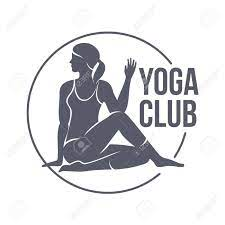

An Integrated and systematic approach to yoga has a positive effect on holistic health. This includes physiological, mental, emotional, social as well as spiritual wellbeing. Health Yoga is most effective in dealing with psychosomatic problems. If practiced thoroughly on long-term it can give a significant effect on a person’s health both on preventive major and curative major with added side benefits.Scientific research has proved the following diseases are amenable through yoga therapy.
It is the art of freeing a corporate man so that he/she is motivated, creative and energized. This program relieves stress while restoring the strength and flexibility that the body inevitably loses while sitting at a desk all day. Employees who are stress free and healthy are happier, perform better and have fewer sick-days. You better visualize the sure and certain outcome of yoga for you and your organization.Corporate Yoga is nothing but the art of freeing a corporate man so that he is motivated, creative and energized.
If you wish to see your kids performing better with added energy level in this age of neck breaking competitive era, it is the best package to introduce them. On the one hand it is foundation course on memory power development, on the other hand it will foster your kids with the development of overall personality by awakening latent energy.It is specially designed package for kids who are the fate and future of the nation. This package program will shape them to be efficient enough to achieve the acme of their life. They will be able to live balanced life with holistic development within.